Core Analysis Results
Comprehensive breakdown of sentiment patterns, fan engagement types, and comment quality metrics
that reveal the unique emotional impact of NewJeans "Ditto."
Overall Sentiment Distribution
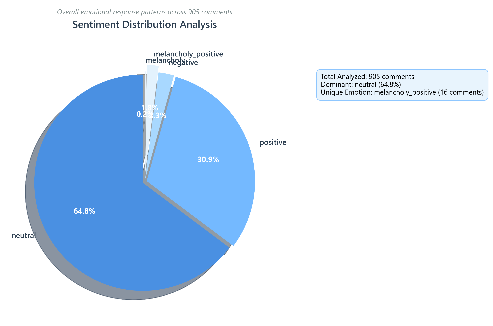
Emotional Profile Radar
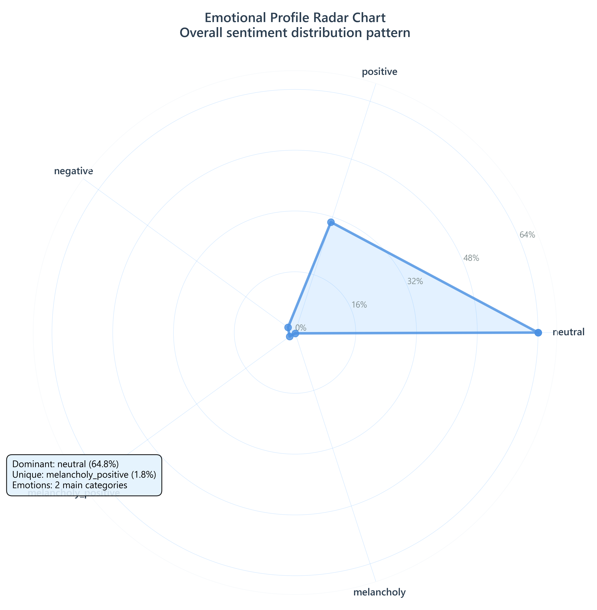
Fan Engagement Types
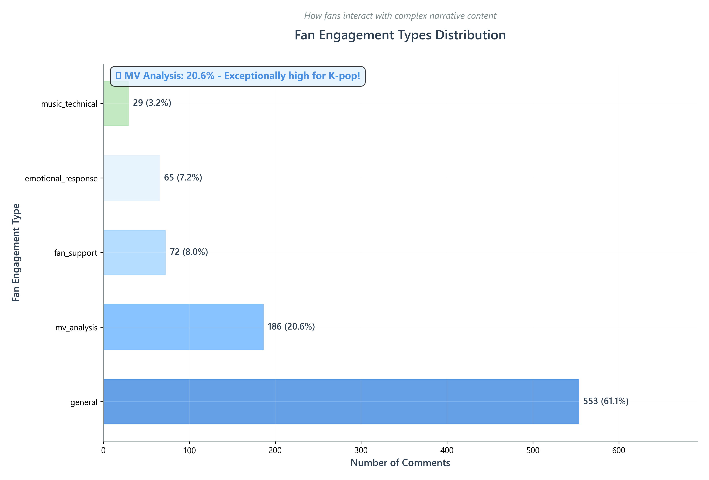
Sentiment × Fan Type Matrix
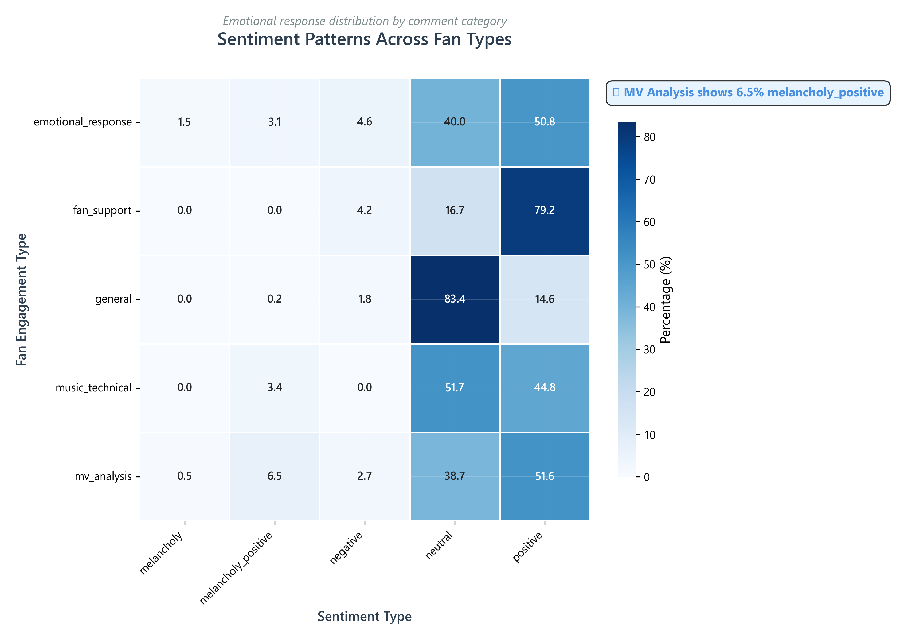
Comment Length & Quality Analysis
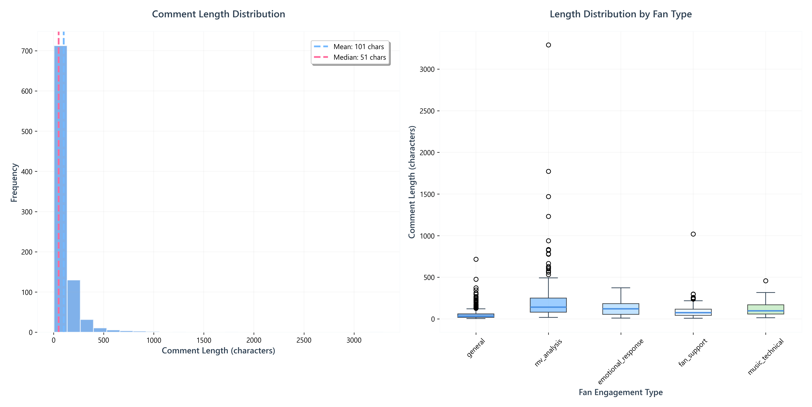
Emotion Frequency Patterns
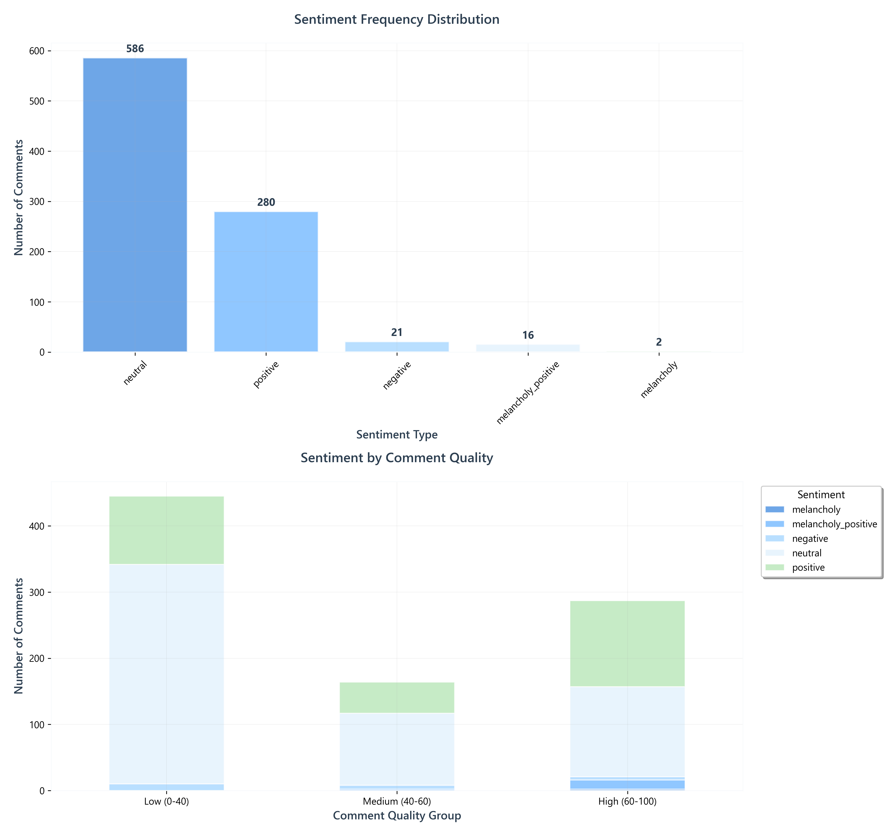
Core Analysis Discoveries
- Balanced Emotional Response: 64.8% neutral sentiment indicates thoughtful, analytical engagement
- Deep Fan Investment: 20.6% MV analysis comments - exceptionally high for K-pop content
- Unique Emotional Category: 1.8% "melancholy-positive" represents Ditto's innovative emotional impact
- Quality Correlation: Longer comments correlate with higher quality scores and deeper analysis
Cross-Cultural Insights
Exploring how different cultural backgrounds shape fan responses to NewJeans "Ditto,"
revealing distinct patterns across Korean domestic and global international markets.
Global Sentiment Heatmap
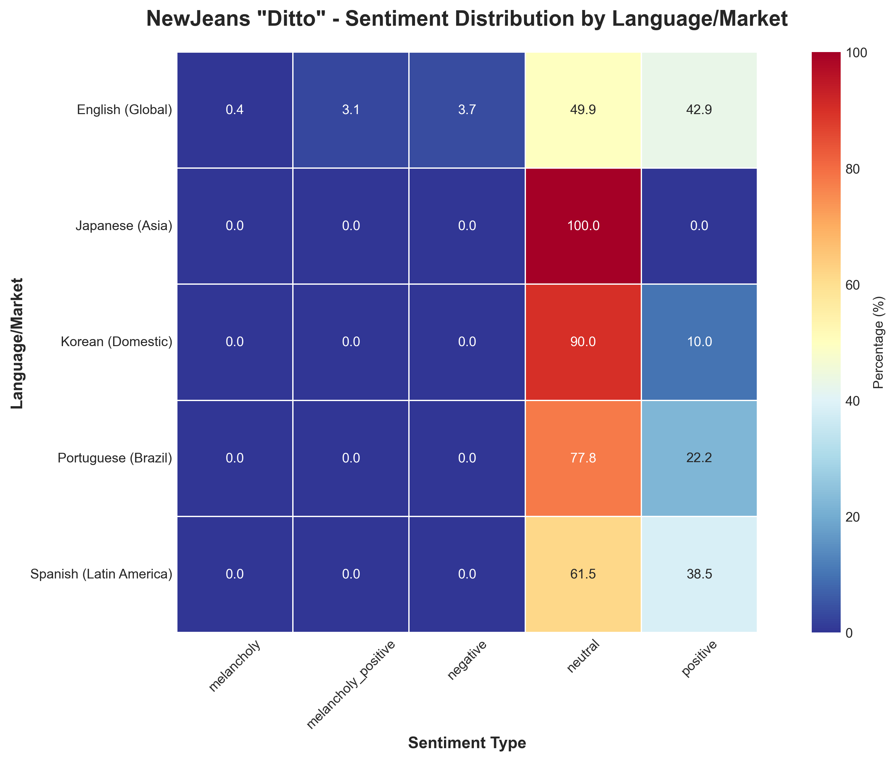
Comment Types by Market
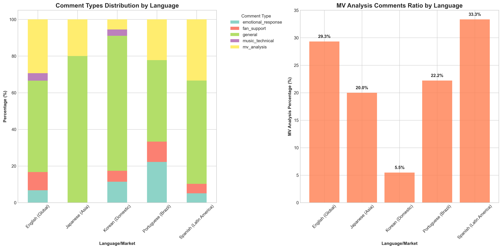
Quality Distribution by Market
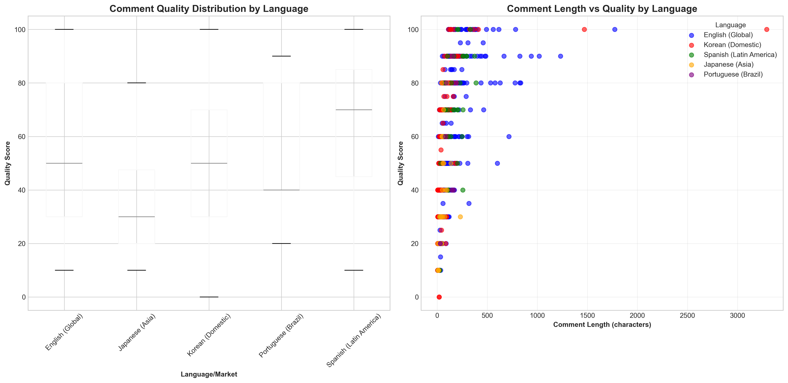
Korean vs Global Comparison
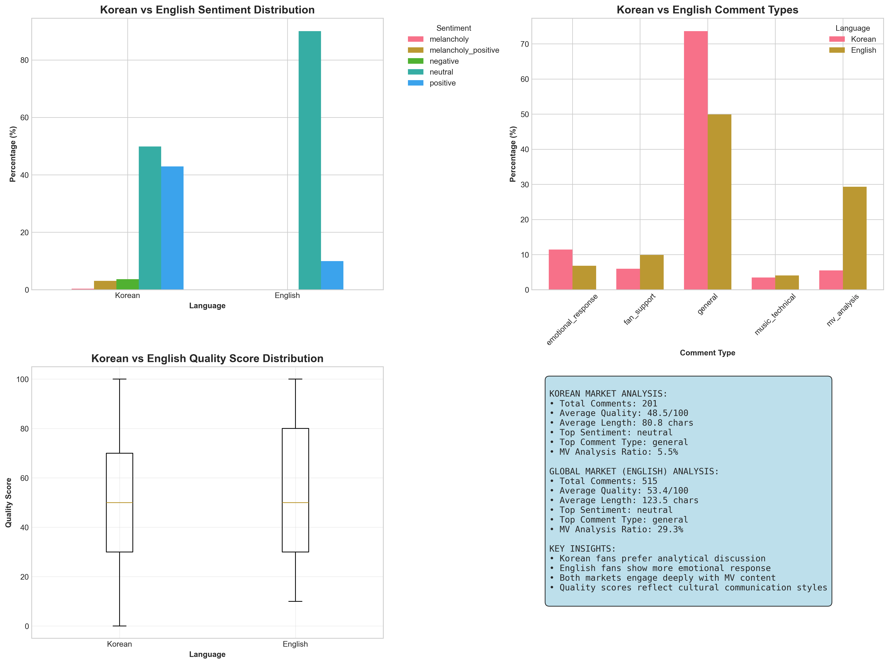
Detailed Cross-Cultural Statistics
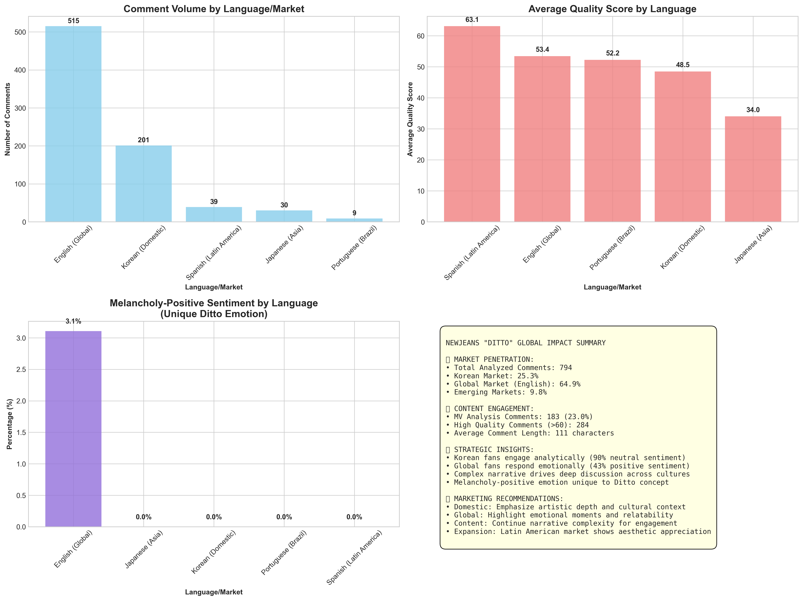
Cross-Cultural Discoveries
- Cultural Communication Styles: Korean fans prefer analytical discourse (90% neutral), while global fans express emotions more directly (43% positive)
- Market Penetration: English-speaking global market dominates (56.9%) with strong Korean domestic presence (22.2%)
- Emerging Markets: Spanish and Portuguese comments indicate growing Latin American fanbase
- Content Appreciation: Korean fans focus on cultural context and artistic depth, global fans emphasize emotional relatability
- Strategic Implications: Domestic marketing should emphasize artistic sophistication; global marketing should highlight emotional accessibility